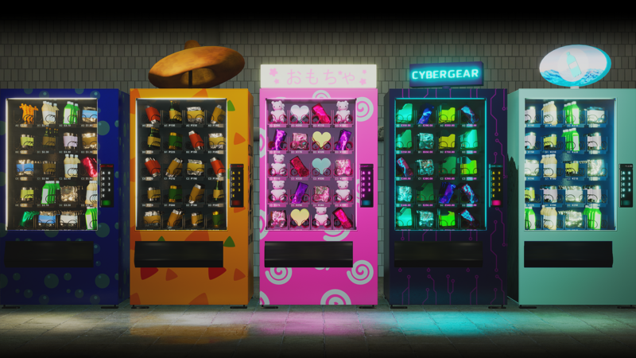

He engages in daily running as part of his training routine.
There are only a few convenience stores near his house.
He regularly consumes energy drinks or water.
NEEDS and GOALS
location-based and navigation assistance
Finding vending machines nearby his current location
Nika
BIO
Age: 19
Residency: Nagoya
Occupation: Student
BEHAVIOR
She has easy access to convenience stores in Nagoya, as it is an urban city.
She has a preference for purchasing Seventeen ice creams from specific vending machines.
NEEDS and GOALS
Search for Specific drinks and foods
Register favorite vending machine
Yohko

BIO
Age: 50
Residency: Osaka
Occupation: Teacher
BEHAVIOR
She occasionally buys drinks for her students. She often struggles with deciding what to purchase.
NEEDS and GOALS
Random drink selection assistance
Adam
Age: 19
Residency: Tokyo
Occupation: IT engineer
BEHAVIOR
He typically doesn’t carry cash with him.
He relies om his ICT card for transactions.
NEEDS and GOALS
Find vending machines that accept ICT cards as payment
Femin
BIO
Age: 30
Residency: Osaka
Occupation: Architect Project Manager
BEHAVIOR
He frequently utilizes vending machines.
He consistently faces the problem of finding suitable places to dispose of PET bottles and cans.